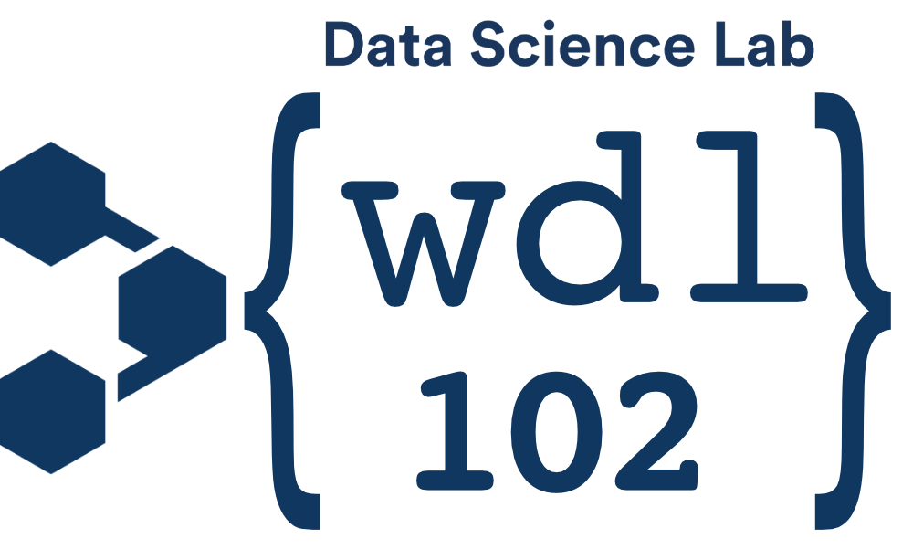

This content was published with bookdown by:
The Fred Hutch Data Science Lab
Style adapted from: rstudio4edu-book (CC-BY 2.0)
November 08, 2022
This guide is intended to be a tool for getting started with designing your own WDL workflows.
